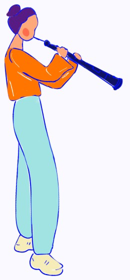
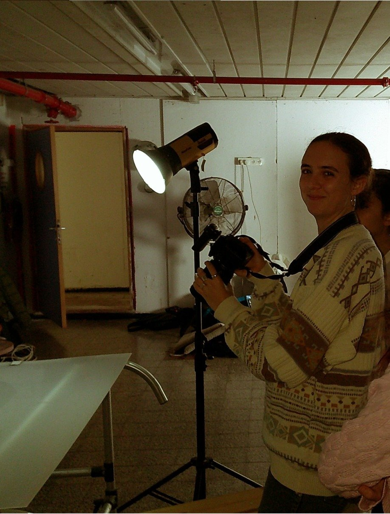
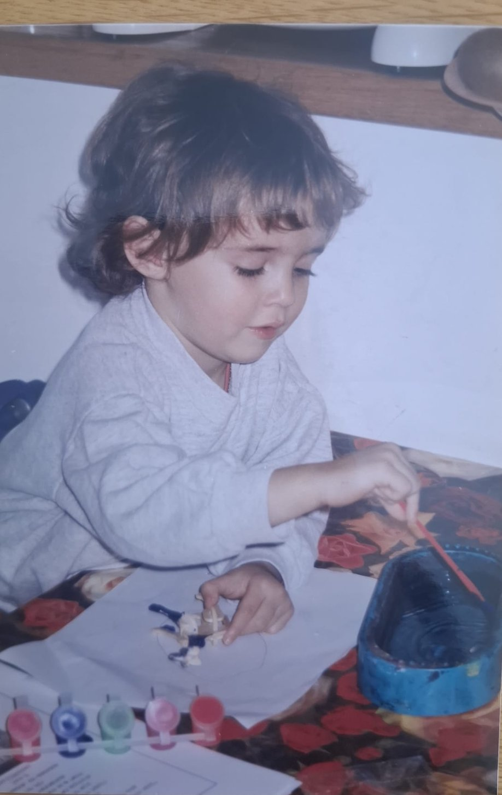

Inbal Keller
About
Playground
Projects
Kabai Hamangalim – Unity Gameplay
Neighborhology – Illustrated Infographics
Dia – UX|UI Diabetes Control Dashboard
Miss P. Home for Peculiar – Title Sequence


